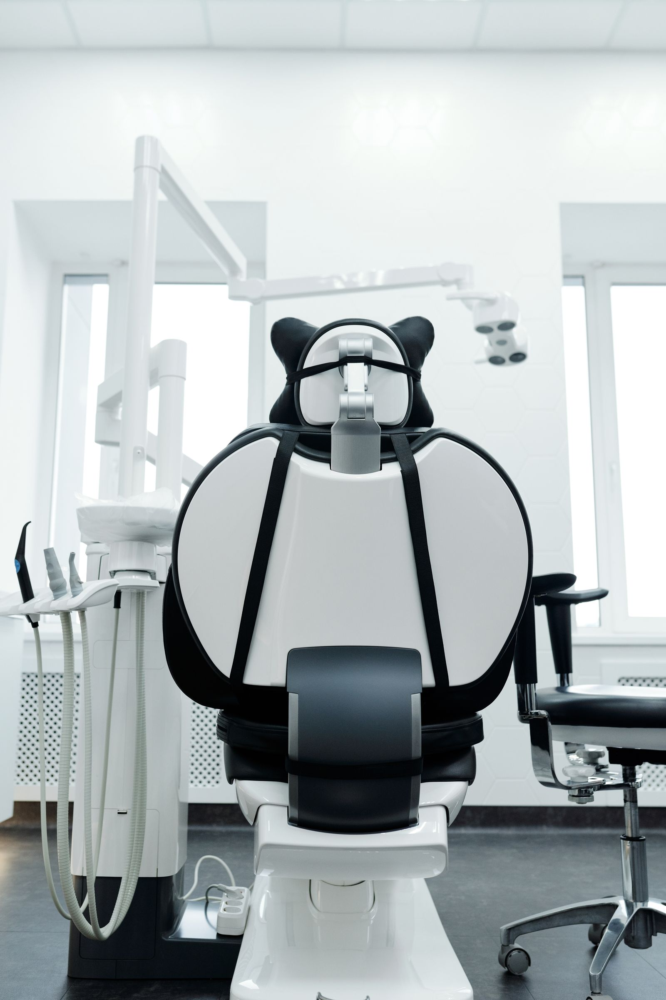
consultorio
Fotografia: Cedric Fauntleroy
Ver origemMateriais da coleção
A moldura comercial pertence à Alek Aquino Soluções Digitais. Logo e favicon foram copiados dos materiais indicados pelo responsável, com proporção e arquivos preservados. As demonstrações odontológicas mantêm suas marcas fictícias.
105 imagens originais: abertura, ambiente, prevenção, ortodontia e infância para cada direção. Geradas com image_gen integrado e conferidas antes de aplicar. As cenas não representam profissionais, pacientes, instalações ou resultados reais.
Consultar imagens por modelo e finalidade. Originais e prompts permanecem no acervo do projeto. As fotografias de banco abaixo pertencem às versões anteriores preservadas.
Fontes e autores abaixo. Pexels License. As pessoas não endossam as marcas fictícias e não representam pacientes, equipe ou resultados das clínicas.

Fotografia: Cedric Fauntleroy
Ver origem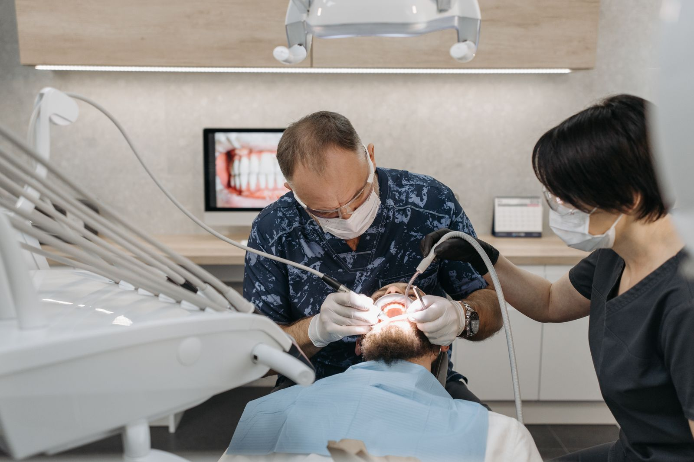
Fotografia: Pavel Danilyuk
Ver origemFotografia: Gustavo Fring
Ver origem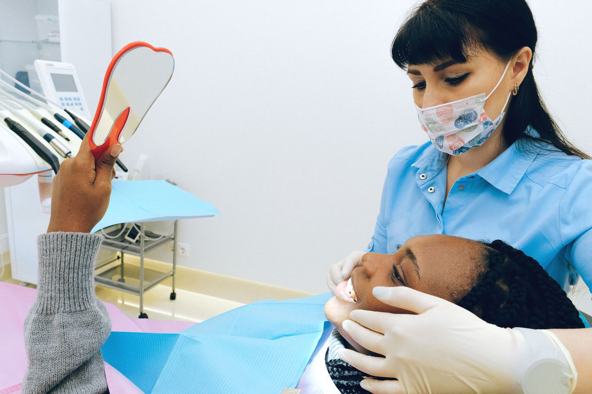
Fotografia: Anna Shvets
Ver origem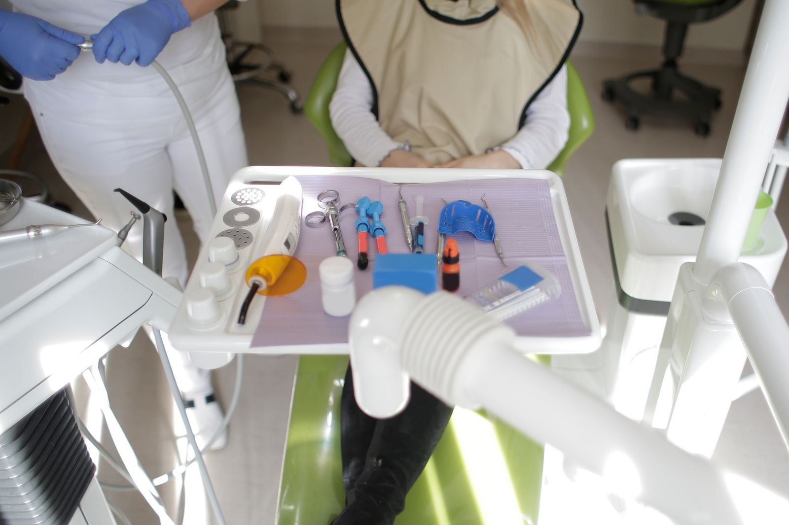
Fotografia: Andrea Piacquadio
Ver origem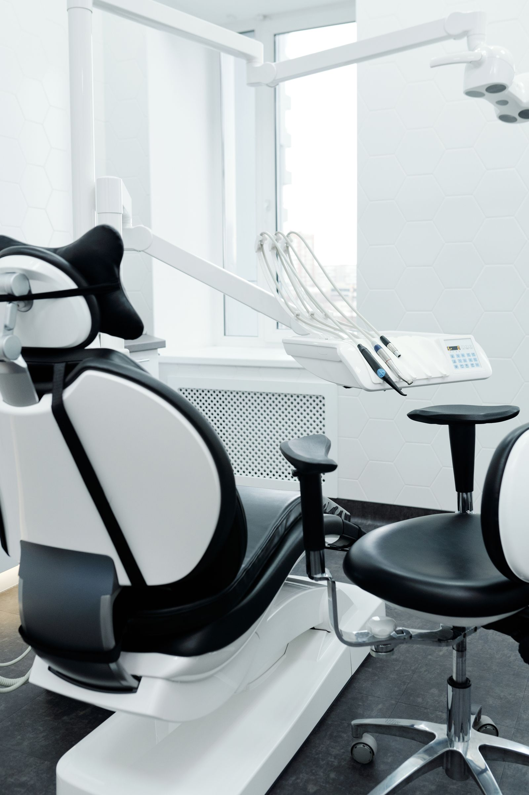
Fotografia: Cedric Fauntleroy
Ver origem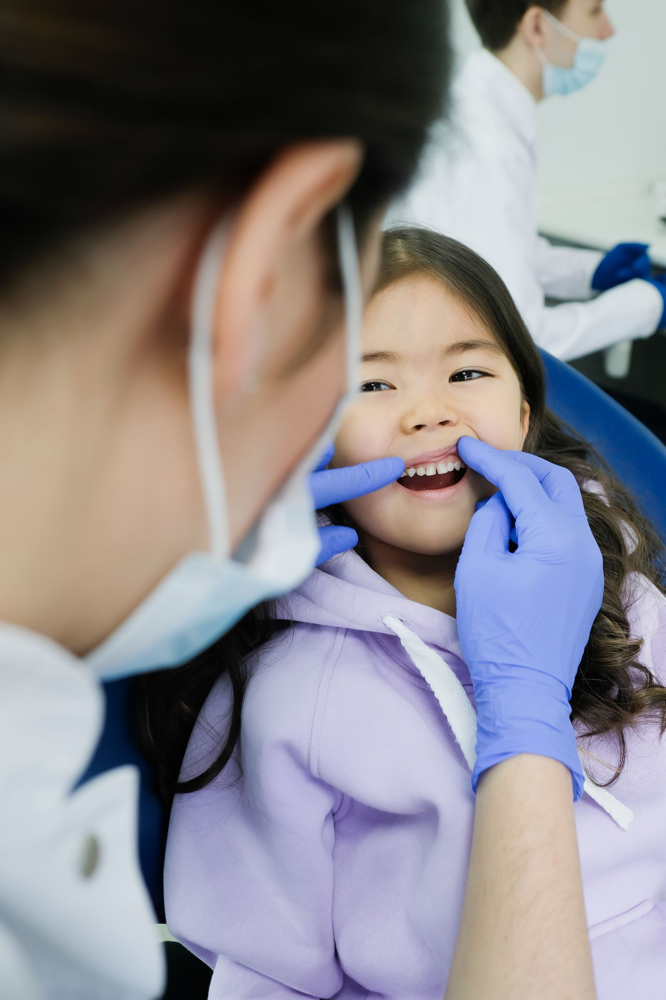
Fotografia: Nadezhda Moryak
Ver origem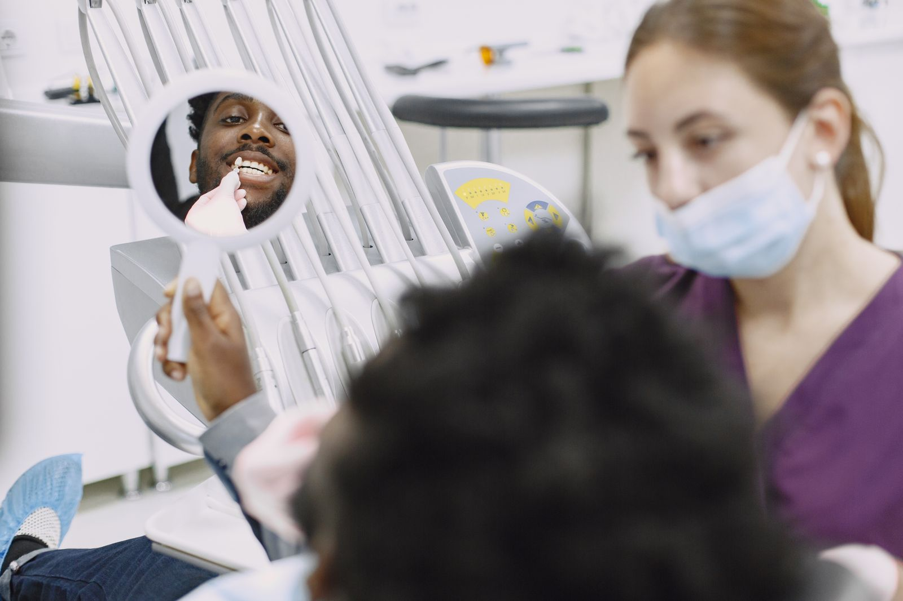
Fotografia: Gustavo Fring
Ver origemFotografia: Puskar Rai
Ver origem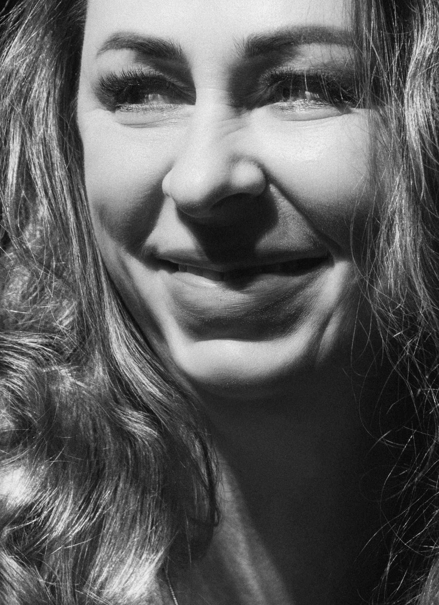
Fotografia: Alexander Krivitskiy
Ver origem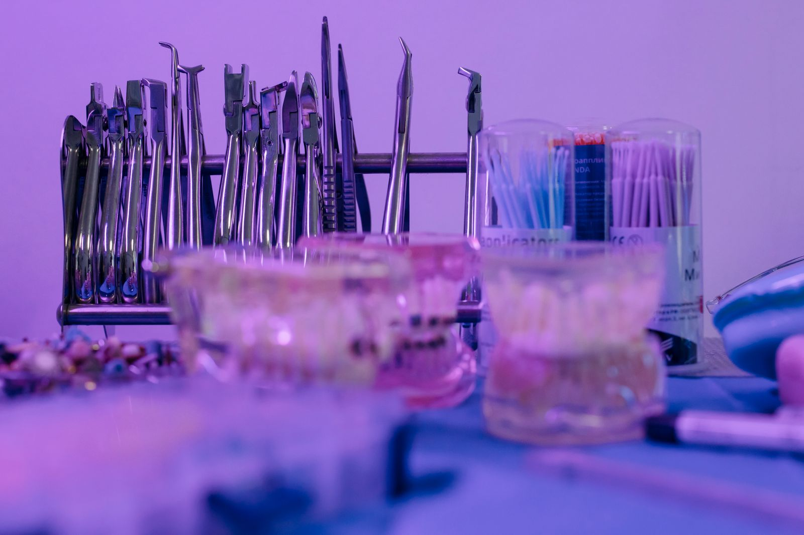
Fotografia: cottonbro studio
Ver origemFotografia: BYB BYB
Ver origem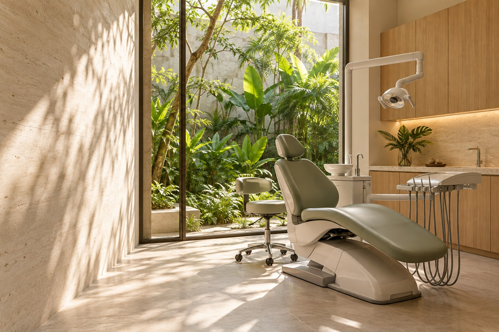
Ambiente fictício gerado com image_gen integrado.
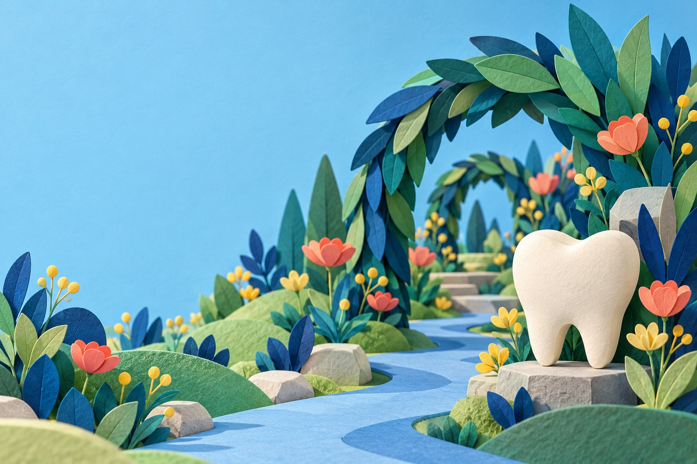
Ilustração original gerada com image_gen integrado.
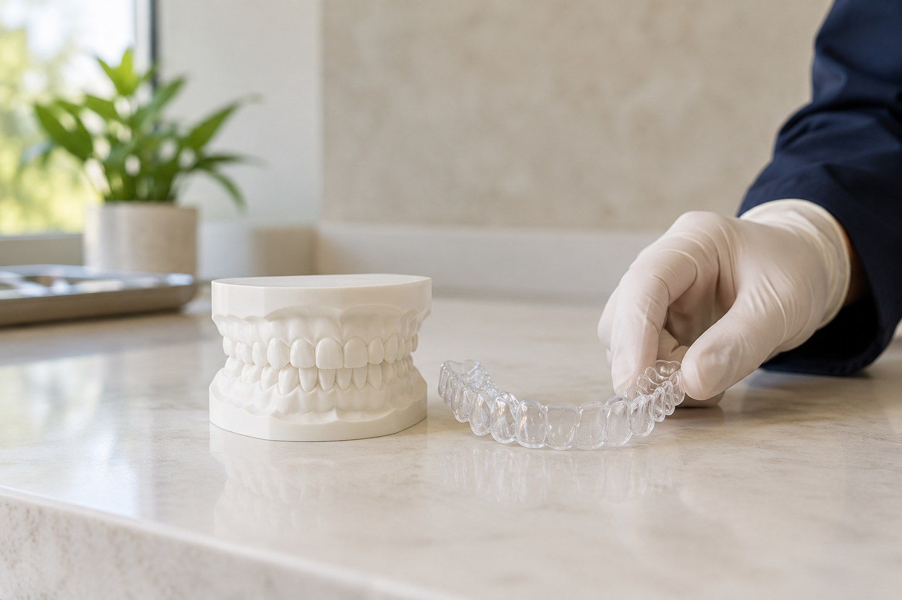
Imagem ilustrativa gerada com image_gen para a direção Essência. Não representa produto, prescrição, paciente ou resultado clínico real. Prompt e origem preservados em assets/geracao-essencia-v2.json.
Liquid Glass Web, de kwlck, incorporado localmente sob licença MIT. Texto da licença · Repositório original. Nenhuma fotografia da demonstração original foi reutilizada.
Distribuição local sob licença MIT. Licença · Fonte original. Sem scripts externos em runtime.
Distribuição local sob licença MIT. Licença · Fonte original. Sem scripts externos em runtime.
Distribuição local sob licença MIT. Licença · Fonte original. Sem scripts externos em runtime.
Distribuição local sob licença MIT. Licença · Fonte original. Sem scripts externos em runtime.
Distribuição local sob licença MIT. Licença · Fonte original. Sem scripts remotos em runtime.
Distribuição local sob licença Apache2.0. Licença · Fonte original. Sem scripts remotos em runtime.
Distribuição local sob licença MIT. Licença · Fonte original. Sem scripts remotos em runtime.
Distribuição local sob licença MIT. Licença · Fonte original. Sem scripts remotos em runtime.
Biblioteca local MIT. Licença · Fonte original. Personagem dental vetorial original do catálogo.
Grafo ESM local sob MIT. Licença · Documentação original. Não carrega o bundle completo.
API e índice de busca locais sob MIT. Licença · Documentação original. Consultas não são enviadas a serviços externos.
Galeria local sob MIT. Licença · Documentação da versão utilizada. Sem autoplay.
Variante local para elementos existentes e valores textuais, sob MIT. Licença · Documentação original. Original preservado para auditoria.
Biblioteca local sob BSD-2-Clause. Licença · Documentação original. Esquema vetorial original do catálogo; sem mapas remotos ou geolocalização.
Galeria local sob MIT. Licença · Fonte original. Somente imagens próprias da Forma, sem vídeo ou iframe.
Biblioteca local MIT. Licença · Fonte original.
Biblioteca local MIT. Licença · Fonte original.
Transformação com CSS View Timeline nativa e alternativa estática; sem polyfill adicional.
Fonte local sob SIL Open Font License. Licença. Origem e integridade registradas no acervo do projeto.
Fonte local sob SIL Open Font License. Licença. Origem e integridade registradas no acervo do projeto.
Fonte local sob SIL Open Font License. Licença. Origem e integridade registradas no acervo do projeto.
Fonte local sob SIL Open Font License. Licença. Origem e integridade registradas no acervo do projeto.
Fonte local sob SIL Open Font License. Licença. Origem e integridade registradas no acervo do projeto.
Fonte local sob SIL Open Font License. Licença. Origem e integridade registradas no acervo do projeto.
Atkinson Hyperlegible Next — Acesso19. Licença OFL.
A galeria usa Cinzel e Manrope. Os modelos preservam Manrope, DM Serif Display e Bricolage Grotesque, conforme sua direção. Licenças SIL Open Font License armazenadas junto aos arquivos.
Textos e código dos sites concorrentes não foram incorporados aos modelos. Os materiais públicos estudados são referências de princípios, não assets para republicar.